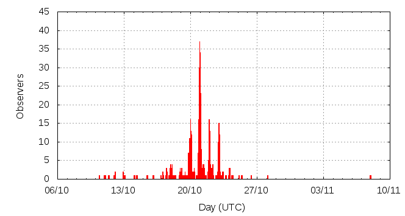

Activity profile
Activity profileThis page shows automated results of the Orionids 2012, based on visual observations reported by citizen scientists through the report form of the International Meteor Organization (IMO). The information on this page is generated automatically; for scientific use please refer to manual analyses published in scientific journals (such as WGN). Send your feedback regarding this page to Geert Barentsen.
Page contents:
Note that the data will finally go into the Visual Meteor Database (VMDB) with manual inspection and rectifications. We are curretly completing the files of 2008-2011. The VMDB is an enormous project - any help will be greatly appreciated.
Page generated: 2013 June 13 at 17:00 UTC.
The graph below shows the ZHR (Zenithal Hourly Rate), which is the number of meteors an observer would see under a very dark sky with the radiant of the shower in zenith.
ZHRmax = 44 based on 2984 Orionids reported in 558 intervals, assuming population index r = 2.5

| Time (UTC) | Solarlon | nINT | nORI | ZHR | Particle density | |
|---|---|---|---|---|---|---|
| 2012-10-11 00:53 | 197.939 | 6 | 12 | 8 | ±2 | 17 / 109·km3 |
| 2012-10-12 09:54 | 199.301 | 5 | 16 | 8 | ±2 | 17 / 109·km3 |
| 2012-10-13 01:45 | 199.954 | 1 | 5 | 6 | ±2 | 13 / 109·km3 |
| 2012-10-14 06:01 | 201.121 | 4 | 11 | 5 | ±1 | 11 / 109·km3 |
| 2012-10-15 21:09 | 202.738 | 3 | 13 | 9 | ±2 | 19 / 109·km3 |
| 2012-10-17 04:42 | 204.043 | 6 | 23 | 10 | ±2 | 21 / 109·km3 |
| 2012-10-17 21:49 | 204.751 | 9 | 21 | 12 | ±3 | 25 / 109·km3 |
| 2012-10-18 01:55 | 204.921 | 8 | 69 | 18 | ±2 | 38 / 109·km3 |
| 2012-10-18 09:28 | 205.233 | 3 | 25 | 15 | ±3 | 32 / 109·km3 |
| 2012-10-18 22:09 | 205.758 | 7 | 20 | 19 | ±4 | 40 / 109·km3 |
| 2012-10-19 01:46 | 205.908 | 10 | 59 | 23 | ±3 | 49 / 109·km3 |
| 2012-10-19 08:30 | 206.186 | 4 | 46 | 21 | ±3 | 44 / 109·km3 |
| 2012-10-19 14:48 | 206.447 | 4 | 23 | 18 | ±4 | 38 / 109·km3 |
| 2012-10-19 23:11 | 206.795 | 37 | 183 | 15 | ±1 | 32 / 109·km3 |
| 2012-10-20 02:03 | 206.913 | 27 | 258 | 20 | ±1 | 42 / 109·km3 |
| 2012-10-20 08:36 | 207.185 | 7 | 72 | 25 | ±3 | 53 / 109·km3 |
| 2012-10-20 13:31 | 207.389 | 4 | 20 | 43 | ±9 | 91 / 109·km3 |
| 2012-10-20 18:36 | 207.599 | 6 | 20 | 26 | ±6 | 55 / 109·km3 |
| 2012-10-20 23:20 | 207.795 | 106 | 416 | 21 | ±1 | 44 / 109·km3 |
| 2012-10-21 01:42 | 207.893 | 64 | 387 | 21 | ±1 | 44 / 109·km3 |
| 2012-10-21 07:40 | 208.141 | 13 | 89 | 25 | ±3 | 53 / 109·km3 |
| 2012-10-21 11:00 | 208.279 | 13 | 89 | 24 | ±3 | 51 / 109·km3 |
| 2012-10-21 20:57 | 208.691 | 9 | 20 | 22 | ±5 | 46 / 109·km3 |
| 2012-10-21 23:57 | 208.816 | 76 | 363 | 19 | ±1 | 40 / 109·km3 |
| 2012-10-22 04:12 | 208.992 | 9 | 92 | 21 | ±2 | 44 / 109·km3 |
| 2012-10-22 08:45 | 209.181 | 14 | 98 | 23 | ±2 | 49 / 109·km3 |
| 2012-10-22 21:38 | 209.715 | 7 | 21 | 19 | ±4 | 40 / 109·km3 |
| 2012-10-23 00:18 | 209.826 | 62 | 239 | 13 | ±1 | 27 / 109·km3 |
| 2012-10-23 04:23 | 209.995 | 3 | 25 | 18 | ±4 | 38 / 109·km3 |
| 2012-10-23 09:00 | 210.186 | 8 | 61 | 25 | ±3 | 53 / 109·km3 |
| 2012-10-23 13:35 | 210.377 | 3 | 29 | 44 | ±8 | 93 / 109·km3 |
| 2012-10-23 22:12 | 210.734 | 4 | 21 | 14 | ±3 | 30 / 109·km3 |
| 2012-10-24 03:16 | 210.945 | 4 | 45 | 21 | ±3 | 44 / 109·km3 |
| 2012-10-24 10:00 | 211.224 | 4 | 46 | 19 | ±3 | 40 / 109·km3 |
| 2012-10-25 07:41 | 212.125 | 3 | 26 | 15 | ±3 | 32 / 109·km3 |
| 2012-10-25 22:56 | 212.758 | 2 | 17 | 13 | ±3 | 27 / 109·km3 |
| 2012-10-28 04:15 | 214.974 | 1 | 4 | 8 | ±4 | 17 / 109·km3 |
| 2012-11-07 22:16 | 225.735 | 2 | 0 | 1 | ±1 | 2 / 109·km3 |
The reported intervals are automatically added together into the bins shown above, based on the number of meteors and the distribution of the intervals. For each bin, the following parameters are computed:
Data has been received from 73 observers in 29 countries. Thank you for your efforts!
Note: click on the map for an interactive version.

| Observer | Country | Teff | nORI |
|---|---|---|---|
| Rainer Arlt | Germany | 2.43h | 6 |
| Marina Arnaut | Serbia | 2.57h | 29 |
| Tom Axelsen | Denmark | 0.80h | 1 |
| Sara Belejova | Slovakia | 6.44h | 56 |
| Nina Bogdanovic | Serbia | 2.25h | 20 |
| Josafary Campelo | Brazil | 0.48h | 2 |
| Yi Cao | China | 0.33h | 5 |
| Nicolae Adrian Corlaci | Romania | 0.84h | 4 |
| Klemen Cotar | Slovenia | 3.83h | 34 |
| Tibor Csörgei | Slovakia | 1.50h | 20 |
| Anderson Dantas | Brazil | 1.00h | 12 |
| Alex Daskalakis | Greece | 0.18h | 3 |
| Mark Davis | United States | 3.98h | 32 |
| Chander Devgun | India | 1.45h | 25 |
| Sietse Dijkstra | Netherlands | 2.02h | 8 |
| John Drummond | New Zealand | 1.00h | 1 |
| Audrius Dubietis | Lithuania | 2.85h | 5 |
| Frank Enzlein | Germany | 6h | 55 |
| Ivanka Getsova | Bulgaria | 13.7h | 70 |
| Sylvie Gorkova | Czech Republic | 6.00h | 26 |
| Oliver Hanke | Germany | 1.00h | 4 |
| Milada Jakubecova | Slovakia | 8.08h | 64 |
| Karoly Jonas | Hungary | 26.07h | 151 |
| Javor Kac | Slovenia | 14.49h | 222 |
| Jozef Karlik | Slovakia | 8.08h | 33 |
| Laszlo Kocsmaros | Serbia | 3.46h | 34 |
| Roman Kovalyk | Italy | 2h | 5 |
| Pete Kozich | United States | 0.53h | 8 |
| Tomasz Lenart | Poland | 5.28h | 47 |
| Michael Linnolt | United States | 1.3h | 13 |
| Qiang Ma | China | 0.50h | 9 |
| Adam Marsh | Australia | 1.25h | 0 |
| Pierre Martin | Canada | 5.12h | 82 |
| Maru\v{s}ka Mole | Slovenia | 1.25h | 16 |
| Alexsandr Morozov | Russia | 1.25h | 2 |
| Marian Mraz | Slovakia | 5.32h | 33 |
| Michael Nolle | Malta | 1.92h | 13 |
| Michal Palo | Slovakia | 8.08h | 35 |
| Martin Polak | Slovakia | 1.00h | 4 |
| Corey Poynton | Australia | 2.00h | 1 |
| Sasha Prokofyev | Russia | 2.77h | 1 |
| Vesselina Sadovska | Bulgaria | 10.05h | 61 |
| Christian Schmiel | Germany | 2.28h | 2 |
| Kai Schultze | Germany | 1.14h | 5 |
| Stanislav Simkovic | Slovakia | 2.22h | 20 |
| Katarina Skopalova | Slovakia | 4.4h | 31 |
| Vesna Slavkovic | Serbia | 5.7h | 45 |
| Florin Stancu | Romania | 2.93h | 28 |
| Wesley Stone | United States | 2.00h | 36 |
| Bsu Students | Russia | 1.00h | 7 |
| Adam Szabo | Hungary | 1.97h | 25 |
| Richard Taibi | United States | 1.72h | 10 |
| Csilla Tepliczky | Hungary | 8.01h | 50 |
| Jurgen Rendtel | Germany | 15.31h | 103 |
| Michel Vandeputte | Belgium | 21h | 93 |
| Terrence Ross | United States | 43.58h | 459 |
| Zdenek Komarek | Slovakia | 8.08h | 50 |
| Alexandr Maidik | Ukraine | 6.65h | 78 |
| Christoph Gerber | Germany | 11.65h | 27 |
| Branislav Savic | Serbia | 13.25h | 142 |
| Pierre Bader | Germany | 6.4h | 30 |
| Maciek Myszkiewicz | Poland | 5h | 8 |
| Jakub Koukal | Czech Republic | 19h | 157 |
| Salvador Aguirre | Mexico | 2.00h | 17 |
| Shigeo Uchiyama | Japan | 1.50h | 18 |
| Peter Van Leuteren | Netherlands | 3.00h | 13 |
| Kristina Veljkovic | Serbia | 9.32h | 74 |
| William Watson | United States | 3.47h | 20 |
| Thomas Weiland | Austria | 10.5h | 141 |
| Alexandrina Yaneva | Bulgaria | 5.16h | 24 |
| Alexandrina Yaneva | Bulgaria | 3.92h | 25 |
| Igor Zahornacky | Slovakia | 1.11h | 5 |
| Ana Zegarac | Serbia | 3.59h | 29 |
| Weizhou Zeng | China | 1.28h | 6 |
Create your own analysis. The files below can be opened using Excel:
ori2012_rate.csv (number of meteors per interval per observer)
ori2012_magn.csv (number of meteors per magnitude bin per observer)
The information on this page may be distributed freely provided credit is given to the International Meteor Organization (IMO) and, when possible, to the individual observers. The computer facilities to generate this page are provided by ESA/RSSD and Armagh Observatory.
References: